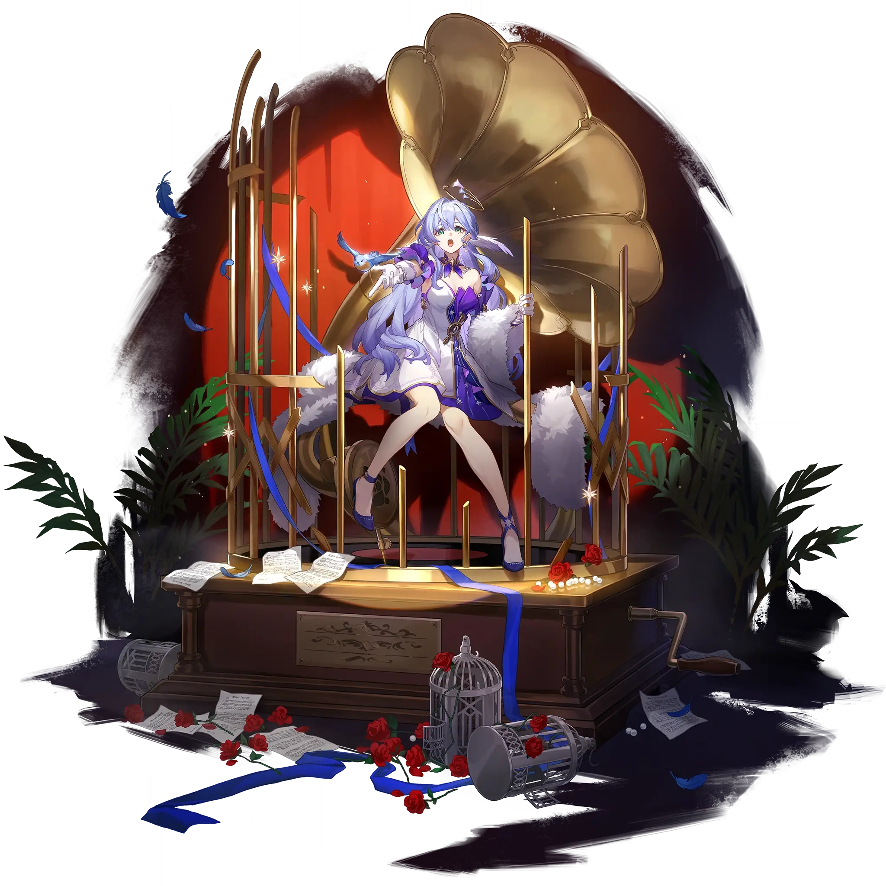

Robin
Best Robin build guide for Honkai Star Rail. See Robin's best Relics, Light Cones, teams, Eidolons, Trace priority, and how to play Robin.
🔍 Detail Skill
Semua skill aktif dan pasif beserta efeknya.
Deals Physical DMG equal to #1[i]% of Robin's ATK to a single target enemy.
Increase DMG dealt by all allies by #1[i]%, lasting for 3 turn(s). This duration decreases by 1 at the start of Robin's every turn.
Increase all allies' CRIT DMG by #1[i]%. Moreover, after allies attack enemy targets, Robin additionally regenerates 2 Energy for herself.
After using Technique, creates a dimension around the character that lasts for 15 seconds. Enemies within this dimension will not attack Robin and will follow Robin while the dimension is active. After entering battle while the dimension is active, Robin regenerates 5 Energy at the start of each wave. Only 1 dimension created by allies can exist at the same time.
⚔ Light Cone Terbaik
Diurutkan dari yang paling kuat. Persentase menunjukkan performa relatif terhadap pilihan terbaik.
💎 Relic Set Terbaik
Set terbaik untuk karakter ini, diurutkan berdasarkan prioritas.
📊 Stat Utama
Stat yang dicari pada tiap slot.
👥 Tim yang Direkomendasikan
Karakter yang sering dipasangkan bersama Robin.
 Sunday
Sunday
 Feixiao
Feixiao
 Aglaea
Aglaea
 Topaz & Numby
Topaz & Numby
 Huohuo
Huohuo
 Aventurine
Aventurine
🔗 Lanjutkan
Build ini dirangkum dari Prydwen Institute. Starwise tidak menghitung sendiri. Angka bisa berubah setelah patch atau karakter baru rilis.